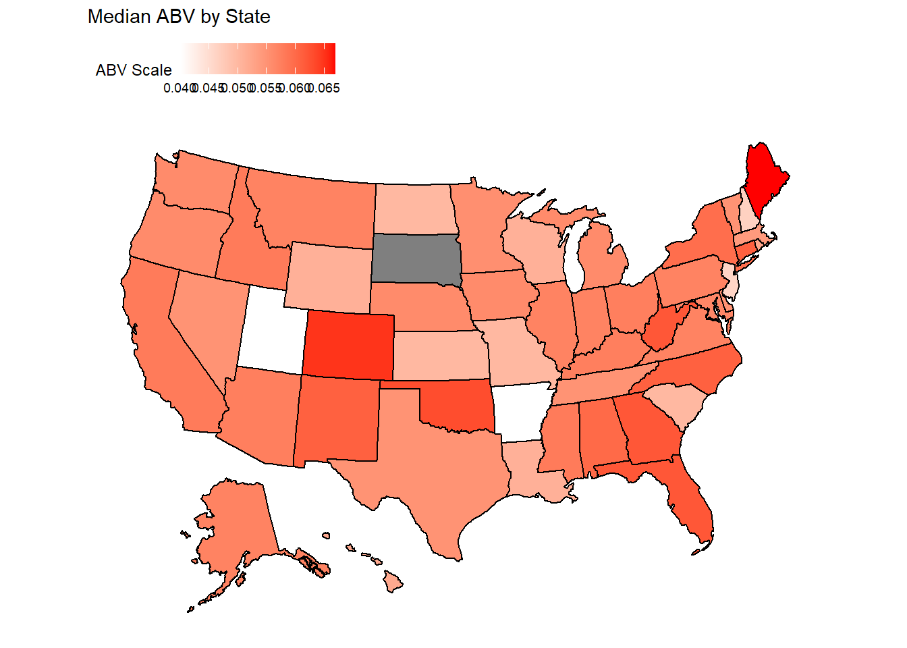

l— output: word_document: default html_document: default —
# Questions - this chunk just holds all the questions for my reading
# 1. How many breweries are present in each state?
# 2. Merge beer data with the breweries data. Print the first 6 observations and the last six observations to check the merged file. (RMD only, this does not need to be included in the presentation or the deck.)
# 3. Address the missing values in each column.
# 4. Compute the median alcohol content and international bitterness unit for each state. Plot a bar chart to compare.
# 5. Which state has the maximum alcoholic (ABV) beer? Which state has the most bitter (IBU) beer?
# 6. Comment on the summary statistics and distribution of the ABV variable.
# 7. Is there an apparent relationship between the bitterness of the beer and its alcoholic content? Draw a scatter plot. Make your best judgment of a relationship and EXPLAIN your answer.
# 8. Budweiser would also like to investigate the difference with respect to IBU and ABV between IPAs (India Pale Ales) and other types of Ale (any beer with “Ale” in its name other than IPA). You decide to use KNN classification to investigate this relationship. Provide statistical evidence one way or the other. You can of course assume your audience is comfortable with percentages … KNN is very easy to understand conceptually.
# In addition, while you have decided to use KNN to investigate this relationship (KNN is required) you may also feel free to supplement your response to this question with any other methods or techniques you have learned. Creativity and alternative solutions are always encouraged.
# 9. Knock their socks off! Find one other useful inference from the data that you feel Budweiser may be able to find value in. You must convince them why it is important and back up your conviction with appropriate statistical evidence
library(tidyverse)
library(maps)
library(mapproj)
library(usmap)
library(curl)
library(class)
library(e1071)
library(caret)
library(plotly)
library(fuzzyjoin)
library(RCurl)Answering question 1 by creating a heat map: How many breweries are there for each state? Answer: top 5 are Colorado, California, Michigan, Oregon, Texas
# write up of the code
# Bringing in the brewery data
brew_data <- read.csv('https://raw.githubusercontent.com/scottdyl/MSDS6306_CastStudy1/main/data/Breweries.csv')
# Counting each brewery by each state and renaming the count column to count
brewery_count = count(brew_data,State)
#trimming the extra spaces off of state
brewery_count$State = str_trim(brewery_count$State)
#getting the fips for each state for my map
brewery_count$fips = fips(brewery_count$State)
#renaming the 'n' column to count
colnames(brewery_count)[2] = 'Count'
# creating the heat map
plot_usmap(data=brewery_count, values="Count", color = "black") + scale_fill_gradient(name = "Count of Breweries", low = "white", high = "red") + labs(title="Brewery Count by State") + theme(legend.position = "top")# getting the top 3 states by brewery for presentation
brewery_count$State[order(brewery_count$Count,decreasing = T)[1:5]]## [1] "CO" "CA" "MI" "OR" "TX"Merging the two datasets from github and printing the first and last 6.
brew_data <- read.csv('https://raw.githubusercontent.com/scottdyl/MSDS6306_CastStudy1/main/data/Breweries.csv')
beer_data <- read.csv('https://raw.githubusercontent.com/scottdyl/MSDS6306_CastStudy1/main/data/Beers.csv')
# changed the ID column name to match in each dataset and did a full join
colnames(beer_data)[5] = 'Brew_ID'
bud_data <- full_join(brew_data,beer_data,'Brew_ID')
head(bud_data,6)## Brew_ID Name.x City State Name.y Beer_ID ABV IBU
## 1 1 NorthGate Brewing Minneapolis MN Get Together 2692 0.045 50
## 2 1 NorthGate Brewing Minneapolis MN Maggie's Leap 2691 0.049 26
## 3 1 NorthGate Brewing Minneapolis MN Wall's End 2690 0.048 19
## 4 1 NorthGate Brewing Minneapolis MN Pumpion 2689 0.060 38
## 5 1 NorthGate Brewing Minneapolis MN Stronghold 2688 0.060 25
## 6 1 NorthGate Brewing Minneapolis MN Parapet ESB 2687 0.056 47
## Style Ounces
## 1 American IPA 16
## 2 Milk / Sweet Stout 16
## 3 English Brown Ale 16
## 4 Pumpkin Ale 16
## 5 American Porter 16
## 6 Extra Special / Strong Bitter (ESB) 16tail(bud_data,6)## Brew_ID Name.x City State
## 2405 556 Ukiah Brewing Company Ukiah CA
## 2406 557 Butternuts Beer and Ale Garrattsville NY
## 2407 557 Butternuts Beer and Ale Garrattsville NY
## 2408 557 Butternuts Beer and Ale Garrattsville NY
## 2409 557 Butternuts Beer and Ale Garrattsville NY
## 2410 558 Sleeping Lady Brewing Company Anchorage AK
## Name.y Beer_ID ABV IBU Style Ounces
## 2405 Pilsner Ukiah 98 0.055 NA German Pilsener 12
## 2406 Heinnieweisse Weissebier 52 0.049 NA Hefeweizen 12
## 2407 Snapperhead IPA 51 0.068 NA American IPA 12
## 2408 Moo Thunder Stout 50 0.049 NA Milk / Sweet Stout 12
## 2409 Porkslap Pale Ale 49 0.043 NA American Pale Ale (APA) 12
## 2410 Urban Wilderness Pale Ale 30 0.049 NA English Pale Ale 12Address the missing values in each column we removed 1005 beers due to missing values
# is it best to just filter out the missing data?
# how else would I fill it in?
#unclean data count
dim(bud_data)## [1] 2410 10#summing possible missing values to see how much data we will lose
sum(is.na(bud_data$ABV))## [1] 62sum(is.na(bud_data$IBU))## [1] 1005#filtering out the missing values and leaving the full data in new dataframe
bud_data_clean<- filter(bud_data,!is.na(bud_data$ABV)&!is.na(bud_data$IBU)&!is.na(bud_data$Style))
colnames(bud_data_clean)[2] = "Brew Name"
colnames(bud_data_clean)[5] = "Beer Name"
#clean data count
dim(bud_data_clean)## [1] 1405 10we would like to find the median alcohol content and IBU for each state this will be presented in a bar chart ggplot used to show the median ABV and IBU for each state using the clean data
# I pipe in the data and group by state then summarize by median abv giving me median abv by state
bud_data_clean %>%
group_by(State) %>%
summarise(median_ABV = median(ABV)) %>%
#I use ggplot bar to plot the data
ggplot(aes(State,median_ABV,fill = median_ABV)) +
geom_bar(stat = 'identity',width = .75,color = 'black')+
scale_fill_gradient(low = 'white', high = 'black') +
labs(title="Median ABV by State", x="State", y="Median ABV")+
theme(axis.text.x = element_text(angle = 90, vjust = .3))# This code does the same as the ABV but by IBU
bud_data_clean %>%
group_by(State) %>%
summarise(median_IBU = median(IBU)) %>%
#I use ggplot bar to plot the data
ggplot(aes(State,median_IBU,fill = median_IBU)) +
geom_bar(stat = 'identity',width = .75,color = 'black')+
scale_fill_gradient(low = 'white', high = 'black') +
labs(title="Median IBU by State", x="State", y="Median IBU")+
theme(axis.text.x = element_text(angle = 90, vjust = .3))we will calculate which state has highest ABV and IBU beer finding the max and selecting the row
# use grep to find the max value then select the columns from the data to show which city, state, name of the beer and name of the brewery
bud_data_clean[grep(max(bud_data_clean$ABV),bud_data_clean$ABV),] %>% select(City, State, `Beer Name`, `Brew Name`, ABV, Style)## City State Beer Name Brew Name ABV
## 8 Louisville KY London Balling Against the Grain Brewery 0.125
## Style
## 8 English Barleywinebud_data_clean[grep(max(bud_data_clean$IBU),bud_data_clean$IBU),] %>% select(City, State, `Beer Name`, `Brew Name`, IBU, Style)## City State Beer Name Brew Name IBU
## 1134 Astoria OR Bitter Bitch Imperial IPA Astoria Brewing Company 138
## Style
## 1134 American Double / Imperial IPAComment on the summary statistics and distribution of the ABV variable. for this I will be using a histogram to show the distribution we showed how the distribution of ABV was by using a histogram
# here I pipe the budwiser data into a ggplot using the variable ABV and create a histogram
bud_data_clean %>%
ggplot(aes(ABV)) +
geom_histogram(fill ='black', binwidth = .0025, color = 'white') +
labs(title="Distribution of ABV")summary(bud_data_clean$ABV)## Min. 1st Qu. Median Mean 3rd Qu. Max.
## 0.02700 0.05000 0.05700 0.05991 0.06800 0.12500#summarize the data by min, max, mean, median, and standard deviation
summarise(bud_data_clean,
max=max(ABV),
min=min(ABV),
mean = mean(ABV),
median = median(ABV),
sd=sd(ABV))## max min mean median sd
## 1 0.125 0.027 0.05991388 0.057 0.01357633Is there an apparent relationship between the bitterness of the beer and its alcoholic content? Draw a scatter plot. Make your best judgment of a relationship and EXPLAIN your answer.
Answer: their appears to be a direct correlation between ABV and IBU. this is presented in the graph below with a strong positive relationship.
bud_data_clean %>%
ggplot(aes(ABV, IBU)) +
geom_jitter(width = .01) +
geom_smooth(method = 'lm', se = F, color = 'red')+
labs(title="Bitterness vs Alcohol", x="Alcohol Content by Volume", y="IBU")## `geom_smooth()` using formula 'y ~ x'# 8. Budweiser would also like to investigate the difference with respect to IBU and ABV between IPAs (India Pale Ales) and other types of Ale (any beer with “Ale” in its name other than IPA). You decide to use KNN classification to investigate this relationship. Provide statistical evidence one way or the other. You can of course assume your audience is comfortable with percentages … KNN is very easy to understand conceptually.
Answer: IBU is a better variable to tell IPA from an Ale over ABV. Overall this model was 86% accurate. IBU was a better descriptor than ABV shown by the clustering of the two beers
# include IPA into one category and ales into another but exclude "india pale ale" from the ale section
# test example is "english india pale ale (IPA)"
# how to do this? filter out all the IPAs first to ensure you don't get them put into the ale section - filter out the ales and merge with IPA data
IPA_Brew <- bud_data_clean %>% filter(grepl("IPA",Style) | grepl("India Pale Ale", Style))
IPA_Brew$General_Style<-"IPA"
Ale_Brew <- bud_data_clean[grepl("Ale",bud_data_clean$Style) & !grepl("India Pale Ale",bud_data_clean$Style) & !grepl("IPA", bud_data_clean$Style),]
Ale_Brew$General_Style<-"Ale"
Beer_train<- rbind(IPA_Brew,Ale_Brew)
Beer_train %>% ggplot(aes(ABV, IBU, color = General_Style)) + geom_jitter(width=.01) + labs(title="Scatterplot Bitterness vs Alcohol of IPAs and Ales", x="Alcohol Content (ABV)", y="Bitterness (IBU)")#KNN train where we set seed to 99 and do a 70/30 split of the data
set.seed(99)
split_data = .70
train_split = sample(1:dim(Beer_train)[1],round(split_data * dim(Beer_train)[1]))
train = Beer_train[train_split,]
test = Beer_train[-train_split,]
#setting up the data frame to find the most accurate K value
accs = data.frame(accuracy = numeric(75), k = numeric(75))
# for loop that runs 75 times over upping the k value by 1 each time k=1:75
for(i in 1:75)
{
classifications = knn(train[,c(7,8)],test[,c(7,8)],train$General_Style, prob = TRUE, k = i)
table(test$General_Style,classifications)
CM = confusionMatrix(table(test$General_Style,classifications))
accs$accuracy[i] = CM$overall[1]
accs$k[i] = i
}
# plotting k and accuracy to see visually how k performs over time
plot(accs$k,accs$accuracy, type = "l", xlab = "k", ylab = "Accurcy by Percent")
#filtering by the best accuracy value
filter(accs, accuracy == max(accs$accuracy))## accuracy k
## 1 0.8551237 32#we will use K = 32 here because that gave us the best results given seed 99
classifications = knn(train[,c(7,8)],test[,c(7,8)],train$General_Style, prob = TRUE, k = 32)
table(test$General_Style,classifications)## classifications
## Ale IPA
## Ale 137 20
## IPA 21 105confusionMatrix(table(test$General_Style,classifications))## Confusion Matrix and Statistics
##
## classifications
## Ale IPA
## Ale 137 20
## IPA 21 105
##
## Accuracy : 0.8551
## 95% CI : (0.8086, 0.894)
## No Information Rate : 0.5583
## P-Value [Acc > NIR] : <2e-16
##
## Kappa : 0.7065
##
## Mcnemar's Test P-Value : 1
##
## Sensitivity : 0.8671
## Specificity : 0.8400
## Pos Pred Value : 0.8726
## Neg Pred Value : 0.8333
## Prevalence : 0.5583
## Detection Rate : 0.4841
## Detection Prevalence : 0.5548
## Balanced Accuracy : 0.8535
##
## 'Positive' Class : Ale
## This is the code Dylan used to answer qustion 9
9. Knock their socks off! Find one other useful inference from the data that you feel Budweiser may be able to find value in. You must convince them why it is important and back up your conviction with appropriate statistical evidence
is one state more likly to purchase local? Where is there a gap in that states beer?
This is using data from another study which can be found on the github and is cited in the slides
Overall Maine had the best chance for a successful booze stout by having a high ABV average but a middle of the road ABV max
# we want to plot the max and median ABV by state and eliminate a state if their regulations are too high
# next we will find a gap in the market by showing number of stouts/porters by states and give reccomondations
#filter the data to stout and get a summary to see what the max abv is
stout_porter <- bud_data_clean %>% filter(grepl("Stout",Style) | grepl("Porter", Style))
summary(stout_porter$ABV)## Min. 1st Qu. Median Mean 3rd Qu. Max.
## 0.03700 0.05500 0.06000 0.06572 0.07100 0.12000#getting the max and median abv by state by using aggregate
state_abv = aggregate(ABV~State,data = bud_data_clean,max)
avg_abv = aggregate(ABV~State,data = bud_data_clean,median)
#trimming off those empty spaces of state from the data *cleaning*
state_abv$State = str_trim(state_abv$State)
avg_abv$State = str_trim(avg_abv$State)
#getting the fips for each state for my map
state_abv$fips = fips(state_abv$State)
avg_abv$fips = fips(avg_abv$State)
#renaming the 'n' column to count
colnames(state_abv)[2] = 'abv'
colnames(avg_abv)[2] = 'abv'
# creating the heat map
plot_usmap(data=state_abv, values="abv", color = "black") +
scale_fill_gradient(name = "ABV Scale", low = "white", high = "red") +
labs(title="Highest ABV by State") + theme(legend.position = "top")plot_usmap(data=avg_abv, values="abv", color = "black") +
scale_fill_gradient(name = "ABV Scale", low = "white", high = "red") +
labs(title="Median ABV by State") + theme(legend.position = "top")
#counting stouts and porters by state
stout_count = count(stout_porter,State)
#changing the column name from n to count
colnames(stout_count)[2] = 'Count'
#creating a bar graph by state to show number of stouts
stout_count %>%
ggplot(aes(State,Count,fill = Count)) +
geom_bar(stat = 'identity',width = .75,color = 'black')+
scale_fill_gradient(low = 'white', high = 'black') +
labs(title="Number of Stouts or Porters by State", x="State", y="Count of Stouts or Porters")+
theme(axis.text.x = element_text(angle = 90, vjust = .3))